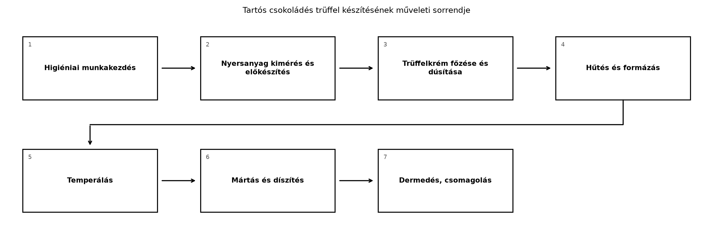

A tartós cukrászati készítmények körébe azok a termékek tartoznak, amelyeket hűtés nélkül, hűvös, száraz helyen, a receptúrától és az igazolt eltarthatósági vizsgálattól függő ideig (tejszínes töltelék esetén jellemzően hetekig) meg tudunk őrizni minőségromlás nélkül. A trüffelkrém és a csokoládéba mártás az egyik legjobb példa erre: a ganache-alapú, dúsított krémet temperált csokoládéval vonjuk be, amely védőrétegként körbezárja a tölteléket. A fejezetben egy tanulási receptet, teljes technológiai lapot és gyakorlati útmutatót dolgozunk ki.
Egy cukrászüzemben december elején 200 darab, egyenként közelítőleg 20 grammos, rumos-diós trüffelt rendelnek karácsonyi ajándékcsomagba. Az áruforgalmi érték jelentős, a minőségnek pedig a teljes ünnepi időszakban fenn kell maradnia. Ha a trüffelkrém túl lágy, a golyók szétfolynak. Ha a csokoládé nincs jól temperálva, a bevonat fénytelen, csíkos lesz, és megjelenhet a zsír- vagy cukorvirágzás. Ha pedig a csomagolás nem megfelelő, a bevonat feltörik, a krém kiszárad vagy felveszi a környezet szagát. A tartós készítményeknél tehát egyszerre kell gondolnunk a technológiára, a higiéniára és a jelölésre.
A következő folyamatábra a tartós csokoládés trüffel gyártásának fő lépéseit mutatja.

A lépések közül a trüffelkrém főzése, a formázás és a temperálás a legkritikusabb. A következőkben mindegyiket részletesen ismertetjük.
Definíció. A tartós cukrászati készítmény olyan, rendszerint magas cukor- és/vagy zsírtartalmú termék, amelynek vízaktivitása () alacsony, ezért kórokozó és romlást okozó mikroorganizmusok nem vagy csak nagyon lassan szaporodnak benne. A tartósságot fokozza a záró csokoládébevonat, a megfelelő csomagolás és a hűvös, száraz, fénytől védett tárolás.
Definíció. A ganache olyan emulzió, amelyet étcsokoládé és forró tejszín keverésével készítünk. Az étcsokoládé kakaóvaja és a tejszín zsírja, valamint a tejszín vizes fázisa stabil keveréket alkot. A trüffelkrém sűrűbb, formázható ganache-változat, amelyet gyakran dúsítunk vajjal, olajos magvakkal, szeszes itallal vagy ízesítőkkel.
Szabály. A trüffelkrém alaparánya általában étcsokoládé : tejszín tömegarány, de a felhasznált csokoládé kakaótartalmától, a tejszín zsírtartalmától és a kívánt állagtól függően ez és között változhat. A magasabb csokoládéarány keményebb, jobban formázható krémet ad; a több tejszín lágyabb, hígabb krémet eredményez.
Definíció. A vízaktivitás () a termékben lévő szabad víz arányát mutatja 0 és 1 között. Az érték 0, ha nincs felhasználható víz a mikrobák számára, és 1 a tiszta víz. A friss tejszínnel készült trüffelkrém értéke receptúrától függően kb. 0,80–0,90 (ellenőrizendő: laboratóriumi mérés), ami a baktériumok szaporodását nem zárja ki teljesen, az élesztők és penészek szaporodását pedig nem gátolja megbízhatóan; ezért a kézműves tejszínes trüffel eltarthatóságát vizsgálattal kell megállapítani, és fontos a tiszta gyártás és a csomagolás. Hónapos eltarthatóság csak alacsony -ra tervezett (pl. invertcukros, tejszín nélküli vagy ipari) töltelékkel érhető el. Az alábbi táblázat a vízaktivitás és a tartósság gyakorlati összefüggését mutatja (ellenőrizendő: hatályos mikrobiológiai útmutatók).
| Vízaktivitás () | Jellemző termékek | Mikrobiológiai viselkedés |
|---|---|---|
| 0,95–1,00 | tejszínkrém, friss gyümölcs | romlékony, hűtést igényel |
| 0,85–0,95 | krémes sütemény, sajt, friss tejszínes ganache (kb. 0,80–0,90; ellenőrizendő) | hűtés nélkül veszélyes, korlátozott eltarthatóság |
| 0,70–0,85 | lekvár, marcipán, alacsony -ra tervezett (tejszín nélküli) töltelék | penészedhet, a legtöbb baktérium nem szaporodik |
| 0,60–0,70 | szárított gyümölcs, méz | hosszú eltarthatóság |
| < 0,60 | csokoládé, cukorka, tészta | évekig eltartható |
Jogszabály. A tartós készítmények előállítására is a 852/2004/EK rendelet általános higiéniai követelményei, a 178/2002/EK rendelet nyomonkövethetőségi kötelezettsége, valamint a 1169/2011/EU rendelet fogyasztói tájékoztatási szabályai vonatkoznak. Az allergén összetevőket és a minőségmegőrzési időt a jelölésen fel kell tüntetni. A csomagolóanyagoknak az 1935/2004/EK rendelet szerint élelmiszerrel érintkezésre alkalmasnak kell lenniük. A csokoládébevonat kakaótartalmára a 2000/36/EK irányelv és a Magyar Élelmiszerkönyv előírásai irányadók (ellenőrizendő: aktuális Magyar Élelmiszerkönyv-szám és hatály). A transz-zsírsavtartalomra a 2019/649/EU rendelet korlátja érvényes (ellenőrizendő: a felhasznált zsiradékok gyártói adatai).
A trüffelkrém készítése során a cél: stabil, sima, jól formázható, alacsony vízaktivitású, intenzív ízű massza.
Recept. Étcsokoládés trüffelkrém alapreceptje (alapmennyiség: 1 080 g krém, tájékoztató arányokkal):
| Nyersanyag | Mennyiség (g) | Megjegyzés |
|---|---|---|
| Étcsokoládé (60–70 % kakaó) | 600 | apróra vágva |
| Tejszín (35 % zsír) | 250 | hőkezelés előtt |
| Vaj (82 % zsír) | 80 | szobahőmérsékletű |
| Glükózszirup (DE 40–43) | 50 | simaság, kedvező |
| Pirított, darált dió | 80 | dúsítás |
| Rum (40 % alkohol) | 20 | ízesítés |
| Összesen | 1080 |
Készítés számozott lépésekkel:
A csokoládébevonat védőréteget képez, amely csökkenti a krém oxigénfelvételét, nedvességvesztését és a szagok felvételét. A temperálás alapjait a A csokoládé temperálása: kristályszerkezet és temperálási görbe alfejezet tartalmazza. Itt az ott tanult munka-hőmérsékletet alkalmazzuk: étcsokoládénál 31–32 °C, tejcsokoládénál 29–30 °C, fehér csokoládénál 28–29 °C (ellenőrizendő: gyártói adatlap).
A képsor a mártás kézi fogását mutatja: a golyó a villán teljesen elmerül, kiemelés után a villát megütögetjük, a talpat lehúzzuk, majd a golyót dermedni tesszük és díszítjük.
A mártás lépései:
Díszítés. A még friss, dermedő bevonatra olvasztott csokoládéval vékony csíkokat húzhatunk, ehető aranyporral enyhén megszórhatjuk, vagy darált dióba, kakaóporba hempergethetjük. Száraz, olajos magvas por esetén az allergén keresztszennyeződés kockázatát külön jelezni kell.
Csomagolás. A kész trüffeleket papírkapszliba, zárt dobozba vagy zacskóba helyezzük. A csomagolóanyagnak élelmiszerrel érintkezésre alkalmasnak kell lennie, és védenie kell a bevonatot a töréstől, a nedvességtől, a fénytől és az idegen szagoktól. A csomagoláson fel kell tüntetni a termék megnevezését, az összetevőket, a tömegét, a minőségmegőrzési időt, a tárolási feltételeket és a gyártó nevét. Az allergéneket a 1169/2011/EU rendelet szerint ki kell emelni.
1. példa – Receptúra-átszámítás 40 darabos gyártáshoz. Az alaprecept 1 080 g trüffelkrémre szól. Hány gramm étcsokoládé, tejszín és vaj szükséges, ha 40 darab, egyenként 18 g-os trüffelgolyót készítünk? A formázási és mártási veszteség 5 % a krémre vetítve.
Megoldás: A szükséges krém nettó tömege: Mivel a veszteség 5 %, a bruttó krémigény: Az alaprecept 1 080 g kész krémre szól. A szorzó: Az étcsokoládé: A tejszín: A vaj: A glükózszirup , a dió , a rum . Ellenőrzés: , ami a bruttó tömeggel (757,9 g) a kerekítés erejéig egyezik.
2. példa – Bevonatmennyiség és a mártótál töltete. Egy 18 g-os trüffelgolyó sűrűsége kb. , a bevonat (csokoládé) sűrűsége kb. (tájékoztató értékek). Mennyi csokoládé kell az 1,2 mm vastag bevonathoz 40 darabra, és mennyit tegyünk a mártótálba?
Megoldás: A golyó térfogata: A sugara: A felülete: Egy golyó bevonata (1,2 mm = 0,12 cm): 40 darabra: A mártáshoz ennél jóval több csokoládét kell a tálba tenni (pl. 600 g), mert a golyót teljesen el kell meríteni; a tálban maradó temperált csokoládé újratemperálás után felhasználható, ha nem szennyeződött. A bevonat így a golyó tömegének kb. 27 %-a, ami vékony, de védő réteg.
Higiéniai munkakezdés. A munkához tiszta munkaruhát, hajhálót és zárt lábbelit viseljünk. Ékszert ne viseljünk. Mossunk kezet meleg vízzel és folyékony szappannal legalább 20 másodpercig, majd fertőtlenítsük. A munkafelületet, az eszközöket és a digitális mérleget tisztítsuk meg, és szükség szerint fertőtlenítsük. A nyersanyagokat ellenőrizzük: a csokoládén ne legyen fehér virágzás, a tejszín ne legyen savanyú szagú, a dió ne legyen dohos, avas.
Biztonsági korlát. A forró tejszín és az olvasztott csokoládé égési sérülést okozhat. Az olvasztóvízfürdőt és a hőmérőt stabilan helyezzük el; a forró folyadékot ne öntsük fejmagasság felett. A gépi művelet tanműhelyi vagy üzemi környezetben, oktatás után és felügyelet mellett végezhető; otthon háztartási géppel, kis adagban gyakoroljunk. A csokoládé temperálásakor ne kerüljön víz a masszába, mert a csokoládé összeugrik.
Technológiai lap.
| Nyersanyag | Mennyiség (g) | Megjegyzés |
|---|---|---|
| Étcsokoládé a krémhez | 421 | 60–70 % kakaó, apróra vágva |
| Étcsokoládé a mártáshoz | 600 | 60–70 % kakaó; a tálba kell, a termékre kb. 200 g kerül, a többi újratemperálva felhasználható |
| Tejszín | 175 | 35 % zsír |
| Vaj | 56 | 82 % zsír |
| Glükózszirup | 35 | DE 40–43 |
| Pirított, darált dió | 56 | dúsítás |
| Rum | 14 | 40 % alkohol |
| Összesen | 1357 | a mártótálban maradó csokoládéval együtt |
A késztermék tömege kb. 920 g (40 db × kb. 23 g); a mártótálban maradó csokoládé újrafelhasználható, ha nem szennyeződött.
Eszközök és gépek: digitális mérleg, indukciós lap, vízfürdő vagy mikrohullámú sütő, lábas, habverő, hőmérő, aprítógép, tálak, habzsák, mártóvilla, szilikonlap vagy sütőpapír, hűtő, csomagolóanyag.
Műveleti sorrend számozott lépésekben, hőfokokkal:
Kritikus pontok (élelmiszerbiztonság) és technológiai kulcspontok:
Allergének (a 14 csoportból):
Minőségi jellemzők: forma szabályos golyó; felület fényes, sima, repedésmentes; bevonat vékony, ropogós; metszet krémes, egynemű, dió egyenletesen eloszlatva; íz harmonikusan édes-keserű, rumos, diós; illat édes, kakaós, enyhe alkoholos.
Tárolás, eltarthatóság, tálalás: hűvös, száraz, szagmentes helyen, 12–18 °C-on, páratartalom < 65 %, fénytől védve. A friss tejszínnel készült trüffel eltarthatósága hetekben mérhető; tájékoztató érték 12–18 °C-on néhány hét, de a minőségmegőrzési/fogyaszthatósági időt a konkrét receptúrára és csomagolásra eltarthatósági vizsgálattal kell megállapítani (ellenőrizendő: belső vizsgálat, NÉBIH-útmutató). Hónapos eltarthatóság csak alacsony vízaktivitásra tervezett töltelékkel érhető el. Tálalás előtt 10–15 perccel érdemes szobahőmérsékletre helyezni, hogy az aroma jobban érvényesüljön.
A kész trüffel vizsgálatakor a következőket ellenőrizzük:
| Hiba | Tünet | Ok | Megelőzés / javítás |
|---|---|---|---|
| Bevont trüffel fénytelen, csíkos | A csokoládé felülete matt, szürkés csíkokkal | Nem megfelelő temperálás, túl alacsony vagy magas munkahőmérséklet | Temperálás újraindítása, hőmérővel ellenőrzés, 31–32 °C munka-hőmérséklet |
| A bevonat reped, a krém kilóg | A trüffel felületén repedések, a krém kinyomódik | Túl vastag bevonat, a krém túl lágy, a hűtött golyó és a meleg csokoládé nagy hőmérsékletkülönbsége | A krémet hűtsük 12–16 °C-ra, a mártócsokoládét tartsuk a munka-hőmérsékleten, vékony rétegben mártani |
| Krém kifolyik a mártás alatt | A golyó formája nem tartja meg, a bevonat alól folyik a krém | A ganache aránya túl lágy, kevés csokoládé, túl sok tejszín, nem elég hideg a krém | Csokoládéarány növelése, hűtés, formázás után azonnal mártás |
| Fehér zsír- vagy cukorvirágzás | A bevonat felületén fehér, márványos foltok | Hőmérsékleti sokk, párás környezet, a csokoládé nem megfelelő tárolása | Száraz, 40–60 % páratartalmú munkakörnyezet, a kész trüffelt fénytől és nedvességtől védeni |
| Avasodás | A diós, vajas töltelék keserű, dohos mellékízt kap | Oxigén, fény, magas tárolási hőmérséklet, hosszú tárolás | Zárt, fényzáró csomagolás, hűvös tárolás, a minőségmegőrzési idő betartása |
| Penész a krémben | A metszeten vagy a bevonat alatt penészfoltok | Magas vízaktivitás, szennyezett alapanyag, rossz higiénia, nem megfelelő hűtés | Nyersanyagok ellenőrzése, tiszta eszközök, alacsony , gyors hűtés |
Egy kis cukrászüzemben karácsonyi megrendelésre 200 darab rumos-diós trüffelt készítettek. A gyártás napján a dolgozó a tejszínt túlhevítette, majd a csokoládéhoz keverte, de a krém szemcsés lett, mert a csokoládéban lévő kakaóvaj túlmelegedett, és a emulzió megtört. A szemcsés krémet mégsem dobták ki, hanem újra enyhén visszamelegítették, és kézi szűrőn átnyomták. A krémet sikerült megmenteni, de az állaga lágyabb lett, ezért hűtés után kisebb golyókat formáztak, és vastagabb csokoládébevonatot kaptak. A minőségellenőrzésnél a 200 darabból 15 darabot félretettek, mert a bevonatuk fénytelen volt a nem megfelelően tartott munka-hőmérséklet miatt. A hibás darabokat nem hozták forgalomba, hanem a dolgozók saját fogyasztására jelölték. A hibaelemzés rámutatott: a hőmérő kalibrálását elmulasztották, és a tejszín hőmérsékletét csak becsülték. A javító intézkedés: minden temperáláshoz és krémfőzéshez kalibrált digitális hőmérőt kell használni, és a mérési eredményt a gyártási lapon rögzíteni.
Továbbvitt eredmény. A trüffelkrém-készítés és a temperált csokoládéba mártás módszerét közvetlenül használjuk a Bonbonok jellemzői, alapanyagai és gyártási módszerei alfejezetben, ahol a töltött bonbonok gyártási módszereit részletezzük.
A válaszok a Megoldások elején találhatók.
1. feladat (A) Határozd meg a trüffelkrém és a ganache fogalmát, és írd le, milyen arányt használunk a formázható trüffelkrémhez!
2. feladat (A) Számítsd ki, hány gramm étcsokoládé és tejszín szükséges 25 dkg formázható trüffelkrémhez, ha az arány (csokoládé : tejszín) és 5 % veszteséget számolunk!
3. feladat (B) Az alaprecept 1 080 g trüffelkrémre szól: 600 g étcsokoládé, 250 g tejszín, 80 g vaj, 50 g glükóz, 80 g dió, 20 g rum. Számítsd át a receptet 120 darab, egyenként 15 g-os trüffelgolyóhoz! A formázási veszteség 4 %, a mártási csokoládét külön számoljuk. Add meg az összes anyag mennyiségét grammban!
4. feladat (B) Rendezd helyes sorrendbe a következő műveleteket a trüffelgyártásnál, és indokold a sorrendet: a) Trüffelkrém főzése b) Temperált csokoládéba mártás c) Hűtés, formázás d) Dermedés, csomagolás e) Nyersanyag kimérés, mise en place f) Dúsítás dióval, rummal
5. feladat (C) A bevonat a kész trüffelen fénytelen, csíkos, és néhol fehéres foltok láthatók. Hipotéziseket fogalmazz meg! Mit ellenőriznél a gyártási naplóban és a technológiában, hogy kiderítsd az okot? Válaszd ki a legvalószínűbb okot, és javasolj helyesbítő intézkedést!
6. feladat (D) Készítsd el a gyakorlati útmutató alapján az étcsokoládéba mártott rumos-diós trüffelt 40 darabos kisüzemi adagban. Töltsd ki a technológiai lapot a saját mért adataiddal, mérd a golyók tömegét, jegyezd fel a temperálás hőmérsékleteit, és értékeld a kész termék minőségi jellemzőit! Fényképes vagy rajzos bizonylat is elfogadható.
Önellenőrzés – válaszok
1. feladat (A) A ganache étcsokoládé és forró tejszín keverésével készült emulzió. A trüffelkrém sűrűbb, formázható ganache-változat, amelyet gyakran dúsítunk vajjal, olajos magvakkal, szeszes itallal. Formázható trüffelkrémhez általában csokoládé : tejszín arányt használunk, de az arány – tartományban változhat.
2. feladat (A) A kívánt mennyiség . A veszteség 5 %, ezért a bruttó tömeg: A arány azt jelenti, hogy a keverékben rész csokoládé + rész tejszín = rész. Egy rész tömege: Csokoládé: Tejszín: Ellenőrzés: , ami a bruttó tömeggel egyezik. A kész trüffelkrém nettó tömege 250 g.
3. feladat (B) A 120 db, 15 g-os golyóhoz szükséges nettó krém: A formázási veszteség 4 %, ezért a bruttó krémigény: Az alaprecept 1 080 g krémre szól, ezért a szorzó: Anyagszükséglet: - Étcsokoládé: - Tejszín: - Vaj: - Glükózszirup: - Dió: - Rum:
Ellenőrzés: , a bruttó tömeggel (1875 g) a kerekítés erejéig egyezik.
A mártáshoz külön kell temperált csokoládét számolni, például a 2. számítási példa szerint kb. 4,8 g/db bevonattal és a tálban maradó többlettel.
4. feladat (B) A helyes sorrend: e) Nyersanyag kimérés, mise en place → a) Trüffelkrém főzése → f) Dúsítás dióval, rummal → c) Hűtés, formázás → b) Temperált csokoládéba mártás → d) Dermedés, csomagolás. Indoklás: először előkészítünk mindent, hogy a folyamat megszakítás nélkül haladjon; a krémet megfőzzük, dúsítjuk, majd lehűtjük és formázzuk; a mártás az utolsó pillanatban történik temperált csokoládéval, mert a krém hidegen jobban kezelhető és a bevonat gyorsan dermed; végül csomagolunk, hogy megóvjuk a kész terméket.
5. feladat (C) Lehetséges okok: 1. Nem megfelelő temperálás – a legvalószínűbb. A csokoládé nem kapta meg a stabil kakaóvaj-kristályokat, vagy a munka-hőmérséklet túl alacsony/magas volt. 2. Párás környezet – a trüffel bevonata vízcseppeket kapott, amelyek rontották a fényt és virágzást okoztak. 3. Hűtött golyó és meleg csokoládé nagy hőmérsékletkülönbsége – a gyors hűtés után a meleg bevonat megsokkolódott. Ellenőrzés: a gyártási naplóban a temperálás hőmérsékleti görbéjét, a munkatér páratartalmát és hőmérsékletét, valamint a golyók maghőmérsékletét kell megnézni. A legvalószínűbb ok: a temperálás nem volt stabil, vagy a munka-hőmérséklet nem 31–32 °C volt. Helyesbítő intézkedés: a csokoládét újratemperálni, a trüffelgolyókat szobahőmérsékletűre hagyni, és a munkakörnyezetet 40–60 % páratartalomra, 18–22 °C-ra beállítani. A hibás tételt újra lehet mártani, ha a krém nem sérült.
6. feladat (D) A gyakorlati feladat értékelése: - Higiénia és munkaszervezés: a tanuló betartja-e a higiéniai munkakezdést, a nyersanyagok ellenőrzését, a munkaterület tisztaságát. - Technológiai sorrend: a műveletek sorrendje helyes-e, különösen a krém hűtése és a mártás. - Mérés és számítás: a kimért anyagok az előírt tömegtől legfeljebb ±5 %-kal térnek-e el; a temperálási hőmérsékleteket feljegyezte-e. - Késztermék minősége: a trüffelek fényesek, repedésmentesek, a bevonat vékony, a krém nem folyik, az íz harmonikus. - Dokumentálás: a technológiai lapon minden kritikus pont mérése szerepel-e, az allergén megjelölés pontos-e. A várt eredmény: 40 db, kb. 23 g-os kész trüffel (18 g krém + kb. 5 g bevonat), fényes, ropogós bevonattal, krémes, diós, rumos töltelékkel, megfelelően csomagolva.
A tartós cukrászati készítmények – mint például a temperált csokoládéba mártott trüffel – alacsony vízaktivitásuk () és védő csokoládébevonatuk révén hűtés nélkül, hűvös helyen eltarthatók; az eltarthatóság hossza a receptúrától függ, és vizsgálattal igazolandó (a tejszínes trüffelnél jellemzően hetek). A trüffelkrém ganache-alapú, általában étcsokoládé : tejszín arányú, dúsítható vajjal, olajos magvakkal és szeszes itallal. A krémet 85–90 °C-ra melegített tejszínnel készítjük, gyorsan lehűtjük 12–16 °C-ra, golyókat formázunk, majd 31–32 °C munka-hőmérsékletűre temperált étcsokoládéba mártjuk. A dermedés 18–22 °C-on, 40–60 % páratartalom mellett történik. A csomagolásnak élelmiszerrel érintkezésre alkalmasnak kell lennie, és a jelölésen fel kell tüntetni az allergéneket, a tárolási feltételeket és a minőségmegőrzési időt. Továbbvitt eredmény. A trüffelkrém és a temperált csokoládéba mártás eljárását a Bonbonok jellemzői, alapanyagai és gyártási módszerei alfejezetben használjuk fel a töltött bonbonok gyártásához.